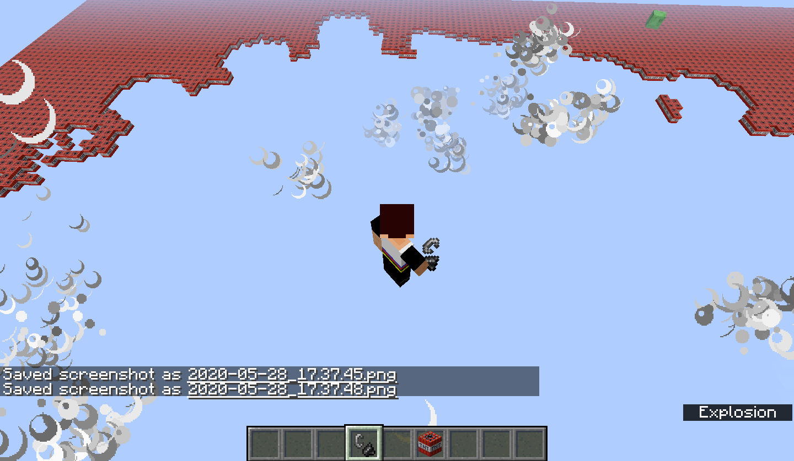

Illustration 2: Me Hiking with Siblings
|
Name |
Dallen |
|
Age |
12 |
|
Birth Day |
March 9th |
|
Nickname |
Deverell Manning |
|
Location |
Middleton |
|
Current School |
IDVA |
|
Siblings: |
Madison, Lydia, Rose |
I live in Middleton. I went to K12 back in First grade, and then we switched to homeschool. In 5th Grade I went to a Charter school, but then COVID happened. 6th Grade was normal until March, as it was for many of you. Eventually my school went online for a while, but it was extremely hard. When we found that this year would be more or less like last year, we resorted to the past, and went back to K12. I have 3 sisters. The youngest is Rose, and shes a year old. Lydia is 8, and Madison is 14.
I program in a language called C++. At the moment, I am learning how to make 2d/3d Graphics using OpenGL. I like archery. I play the Clarinet, and I'm learning to play the Bodhran (Irish Drum) I like making and playing games. I make them in a variety of ways, like Programming them, or role-playing games. I like Drawing and Writing, and I want to learn to compose music. All this helps me make the games I was talking about earlier. I Play Minecraft, and Roblox. Minecraft is definitely my favorite game. Mostly on the internet, I call myself Deverell Manning, which is basically the other version of myself. My Minecraft Username is, therefore, DeverellManning. I also went hiking overnight for the first time about 2 weeks ago. I've went camping before, but not hiking. I am excited to have school this year, and meet new people. If I meet any of you in Minecraft, that would be great.

Illustration
1: Me Exploding a TNT world in Mincraft
Illustration
2: Me Hiking with Siblings